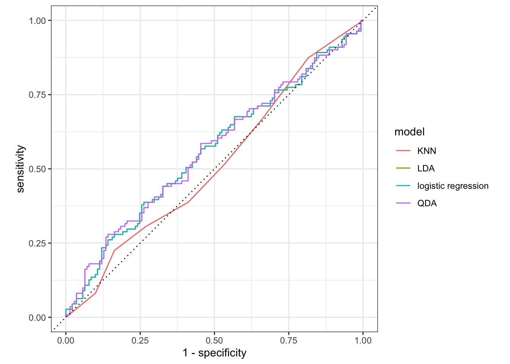

Chapter 5 Extra - comparing multiple models
This section is new and not part of ISLR. We have fitted a lot of different models in this lab. And we were able to calculate the performance metrics one by one, but it is not ideal if we want to compare the different models. Below is an example of how you can more conveniently calculate performance metrics for multiple models at the same time.
Start of by creating a named list of the fitted models you want to evaluate. I have made sure only to include models that were fitted on the same parameters to make it easier to compare them.
models <- list("logistic regression" = lr_fit3,
"LDA" = lda_fit,
"QDA" = qda_fit,
"KNN" = knn_fit)Next use imap_dfr() from the purrr package to apply augment() to each of the models using the testing data set. .id = "model" creates a column named "model" that is added to the resulting tibble using the names of models.
preds <- imap_dfr(models, augment,
new_data = Smarket_test, .id = "model")
preds %>%
select(model, Direction, .pred_class, .pred_Down, .pred_Up)## # A tibble: 1,008 x 5
## model Direction .pred_class .pred_Down .pred_Up
## <chr> <fct> <fct> <dbl> <dbl>
## 1 logistic regression Down Up 0.490 0.510
## 2 logistic regression Down Up 0.479 0.521
## 3 logistic regression Down Up 0.467 0.533
## 4 logistic regression Up Up 0.474 0.526
## 5 logistic regression Down Up 0.493 0.507
## 6 logistic regression Up Up 0.494 0.506
## 7 logistic regression Down Up 0.495 0.505
## 8 logistic regression Up Up 0.487 0.513
## 9 logistic regression Down Up 0.491 0.509
## 10 logistic regression Up Up 0.484 0.516
## # … with 998 more rowswe have seen how to use accuracy() a lot of times by now, but it is not the only metric to use for classification, and yardstick provides many more.
You can combine multiple different metrics together with metric_set()
multi_metric <- metric_set(accuracy, sensitivity, specificity)and then the resulting function can be applied to calculate multiple metrics at the same time. All of the yardstick works with grouped tibbles so by calling group_by(model) we can calculate the metrics for each of the models in one go.
preds %>%
group_by(model) %>%
multi_metric(truth = Direction, estimate = .pred_class)## # A tibble: 12 x 4
## model .metric .estimator .estimate
## <chr> <chr> <chr> <dbl>
## 1 KNN accuracy binary 0.5
## 2 LDA accuracy binary 0.560
## 3 logistic regression accuracy binary 0.560
## 4 QDA accuracy binary 0.599
## 5 KNN sens binary 0.387
## 6 LDA sens binary 0.315
## 7 logistic regression sens binary 0.315
## 8 QDA sens binary 0.270
## 9 KNN spec binary 0.589
## 10 LDA spec binary 0.752
## 11 logistic regression spec binary 0.752
## 12 QDA spec binary 0.858The same technique can be used to create ROC curves.
preds %>%
group_by(model) %>%
roc_curve(Direction, .pred_Down) %>%
autoplot()
Here you can’t see the LDA because it lies perfectly under the logistic regression.